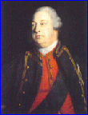

Oran Eile air Latha Chuil-Fhodair
Le Iain Ruaidh Stiùbhairt
Another song on Culloden Day - Autre Chant sur Culloden
Verses from "Comchruinneacha do dh'Orain Taghta Ghaidhealach"collected by Patrick Turner , Edinburgh 1818
Arranged in the order of the English translation by Charles Rogers in "Modern Scottish Minstrel" (1856)
by Iain Ruaidh Stiùbhairt - John Roy Stewart (1700 -1752)
Tune"Culloden Day"
Sequenced by Christian Souchon
|
Irish variant of the
"Inverness Gathering"
also known as
"The March of the Meenatoitin Bull"
. Donegal version notated by fiddler John Doherty (1895-1980, County Donegal) in "The Northern Fiddler" (Feldman & O’Doherty , 1979; pg. 87 - march)."
Source: Andrew Kuntz, "The Fiddler's Companion". (see "links") |
Variante irlandaise connue du
"Rassemblement d'Inverness "
connue sous le titre de "
Marche du taureau de Meenatoitin
". La présente version (du Donegal) a été transcrite par le violoniste John Doherty (1895-1980, Comté de Donegal) dans "The Northern Fiddler" (Feldman & O’Doherty, 1979; pg. 87 (marche)."
Source: Andrew Kuntz, "The Fiddler's Companion". (cf. "Liens") |


|
CULLODEN DAY- SECOND SONG
|
ORAN EILE AIR LATHA CHUIL-FHODAIR.
1. 0! gur mis' th'air mo chràdh, Thuit mo chridhe gu làr, 'S tric snithe gu m' shàil o rn' leirsinn. 2. Dh'fhalbh mo chlaistinneachd uam, Sheac le mulad mo gruaidh, Us nach cluinn mi 'san uair sgeul èibhinn. 3. Mu Phrionns' Thearlach mo rùn, Oighre dligheach a' chrùin, 'S e gun fhios ciod an tùbh a thèid e. 4. Sàr-fuil rìoghail nam buadh, Tha 'ga dìobairt 'san uair-s', 'S a'chlann diolain [1] a suas ag éirigh. 5. Sìol nan Cuilean [2] gun bhàidh, Dh'am maith-chinnich an t-àl, Chuir iad sinn' ann an càs na h-èigin. 6. Ged a bhuannaich sibh blàr, Cba b' ann d' ur cruadal a bha, Ach gun ar shluagbainn' bhi 'n dàil a chèile. 8. Feachd chòig brataichean [3] sròil, Bu mhaith chuireadh an lò, Bhith 'gar dith anns a' chomhdhail chreuchdaich. 9. Iarla Chrombaidh [4] le shlògh, Agus Bàrasdal òg, 'S Mac-Fhionghain le sheòid nach gèilleadh. 10. Clann-Ghriogair nan Gleann [5] Buidheann ghiobach nan lann Fir a thigeadh a nall nan èight' iad. 11. Clann-Mhuirich [6] nam buadh, Iadsan uile bha uainn, 'S è sin m'iomadan truagh r'a leughadh. 12. A Chlann-Dòmhnuill mo ghràidh, 'Ga 'm bu shuaithcheantas fraoch, Mo chreach uile ! nacb d' fhaod sibh èiridh. [7] 12-bis An fhuil uaibhreach gun mheang, Bha buan, cruadalach, ann, Ged chaidh 'ur bualadh an am na teugbhail. 21. Dream eile mo chreach, Fhuair an laimhseacha' goirt, Ga'n ceann am Frisealach gasda, treubhach. 20. Clann-Fhionnlaidh [9] Bbraidh-Bbarr, Buidheann ceannsgalach, ard, 'N uair a ghlaoidhte adbhans 's iad a dh'eireadh. 19. Mo chreach uile 's mo bbròn. Na fir ghasd' tha fo leòn, Clann-Chatain nan sròl'nan geur-lann. 23. Chaill sinn Dòmhnull Donn, suairc, O Dhùn Chrompa so shuas, Mar ri Alasdair Ruadh na fèile. 24. Chaill sinn Raibeart an àigh, 'S cha bu ghealtair e' m blàr Fear sgathaidh nan cnàmh 's nam feithean. [12] 25. 'S ann thuit na rionnagan gasd ; Bu mhath àluinn an dreach, Cha bu phàigheadh leinn mairt na'n èirig. 13. Air thus an latha dol sìos, Bla gaodh a' cathadh nan sian, As an adhar bha trian ar lèiridh. 14. Dh' fhàs an talamh cho trom, Gach fraoch, fearunn a's fonn, 'S nach bu chothrom dhuinn lom an t-slèibhe. 15. Lasair theine nan Gall, Frasadh pheileir mu 'r ceann, Mhill sid eireachdas lann 's bu bheud e. [13] 16. Mas fior an dàna g'a cheann, Gu 'n robh Achan [14](*) 'sa chàmp, Dearg mheirleach nan raud 's nam breugan. 17. 'S e sin an Seanalair mòr Gràin a's mallachd an t-slòigh, Reic e onoir 'sa chòir air eucoir. 18. Thionndaidh choileir 'sa chleòc, Air son an sporain bu mhò, Rinn sud dolaidh do sheoid rìgh Seumas. [15] 26. Ach thig cuibhle an fhortain mu 'n cuairt, Car bho dheas na bho thuath, 'S gheibh ar 'n eascaraid duais na h-eucoir. 27. 'S gu 'm bi Uilleam Mac Dheòrs', [16] Mur chraoibh gun duilleach fo leòn, Gun fhreamh, gun mheangan, gun mheòirnean gèige. 28. Gu ma lom bhios do leac, Gun bheau, gun bhràthair gun mhac, Gun fhuaim clàrsaich, gun lasair cheire. 29. Gun sòlas, sonas, no seanns, Ach dòlas dona mu d' cheann, Mar bh' air ginealach Chlann na h-Eiphit. 30. A's chì sinn fhathasd do cheann, Dol gun athadh ri crann, 'S eoin an adhair gu teann ga reubadh. 31. 'S bi'dh sinn uile fa-dheòidh, Araon sean agus òg, Fo 'n rìgh dhttgheach 'ga 'n còir duinn gèilleadh. (*) Morair Seoras Moireach. |
LA JOURNEE DE CULLODEN - 2ème CHANT
|
|
Remarks:
The verses are numbered the same way as on the previous page. Verse 12-bis (in italics, describing the McDonalds) is found in "Sar Obair" (1865) and "Bliath na Theàrlach" (1844) but not in "Gaelic Bards" (1890) which John Lorne Campbell translated. Verses (a) to (d) in Rogers' translation were found in none of the Gaelic texts I could consult. The following notes (except the remarks on Cromarty and on the thre McGillevrays) are copied from "Modern Scottish Minstrel": [1] The Jacobites retorted on George II, son of a divorcee, the alleged spuriousness of the Chevalier de St George. They believed that the Swede von Königsmark was King George II's real father. (See "Came Ye Over from France?" ). [2] George Whelps: George the Guelph (= of Hanover), King George. (Ibidem). But the assonance "Guelf/Whelp" does not exist in Gaelic where "whelp" translates as "cuilean". [3] John Roy was among the few in Charles' Council who thought that no attack should be considered at Culloden until the arrival of the rest of the army. This verse and the following ones enumerate the units supposed to be on their march to Inverness and whose arrival could be expected in 2 or 3 days at farthest: The Cromarty Regiment, a body of Frasers, the McPhersons under their chief Cluny, the McGregors under Glengyle, a party under old Chief McKinnon and a body of McDonalds of Glengarry under the son of Colonel McDonald of Barisdale. [4] "George McKenzie, Third Earl of Cromartie, raised a regiment recruited in large part from his tenants in Coigach and officered by their Tacksmen to fight for Bonnie Prince Charlie. The regiment was sent north early in 1746 to occupy SutherlandShire, and captured Dunrobin Castle ... While rushing south to rejoin the main Jacobite army the regiment was captured by the Sutherland Militia the day before the Battle of Culloden. Some of Cromartie's Regiment drowned trying to swim across Dornoch Firth to Easter Ross, others escaped across the mountains and slowly made their way home, but 218 were taken prisoner, including the Earl and his 20 year old son John McKenzie, titled Lord McLeod. One third of the prisoners died in brutal captivity, 152 survived to be transported to exile in Barbados. Jamaica, and the American colonies. A lucky ten were pardoned including Lord MacLeod, who was pardoned on condition that within six months of his majority (21st birthday) he convey to the Crown all his rights in the Earldom. He did so, and departed for a distinguished military career in Europe. The captured Jacobite Lairds, including Cromartie, were imprisoned in the Tower of London, and sentenced by trial in the House of Lords to beheading. His sentence was commuted to a lifetime of house arrest in England after his pregnant wife pleaded for mercy with the King and Duke of Cumberland. Cromartie spent the next two decades locked away in poverty stripped of lands and title, till his death 29 September 1766 in Poland Street, London. " Source: http://freepages.genealogy.rootsweb.com/~coigach/cromartie.html [5] Glengyle and the his McGregors, were on their way back from a raid on Sutherland, but did not come in time to take part in the battle. [6] McPherson of Clunie had led the skirmish at Clifton, the night before Culloden. [7] McDonald of the Isles refused to join the Jacobite army. [8] While the unit mostly consisting of Frasers retreated to Inverness, they were pursued by the Duke of Cumberland's light horse and almost entirely massacred. [9] The Farquharsons fought on the right wing and suffered enormous casualties. [10] The Mackintoshes fighting on the right wing attacked even before they had received the order to engage. They were of course the principal sufferers of their temerity. [11] An allusion to the provocation given to the McDonalds of Clanranald, Glengarry, and Keppoch, by being deprived of their usual position--the right wing. Their motions were allegedly slow in consequence. John Roy was himself in the right wing. [12] Three McGillevrays: Donald Donn (brownhaired) McGillevray of Dalcrombie, Alasdair Ruadh (redhaired) McGillevray of Drumnaglass and Captain Raipert (Robert) McGillevray. [13] The unfortunate night-march of the Highlanders is described with historic truth and great poetic effect. [14] Roy Stuart believed (wrongly, as it seems), that Lord George Murray was bribed and had betrayed his army. [15] Military orders received from the exile sovereign. [16] The Duke of Cumberland. |
Remarques:
Les strophes sont numérotées comme sur la page précédente. La strophe 12-bis (en italique, description des McDonald) se trouvent dans "Sar Obair" (1865) et "Bliath na Theàrlach" (1844), mais non dans "Gaelic Bards" (1890), qui est la version traduite par John Lorne Campbell. Les strophes (a) à (d) de la traduction de Rogers ne se trouvent dans aucun des textes gaéliques que j'ai pu consulter. Les notes qui suivent (sauf celles sur Cromarty et sur les trois McGillevray) sont tirées du "Modern Scottish Minstrel": [1] Les Jacobites retournaient contre Georges II, fils de divorcée, le reproche fait au Chevalier de St Georges d'être un enfant illégitime. Ils considéraient que le Suédois Koenigsmark était le vrai père de George II. (Cf "Viens-tu de France?" . [2] George Whelps : Georges "le Chiot" ou "le Guelfe" (= de Hanovre), le Roi Georges. (Cf ibidem). Mais l'assonance "Guelf/Whelp" n'existe pas en gaélique où "chiot" se dit "cuilean" [3] John Roy était au nombre de ceux dans le conseil de Charles qui pensaient qu'il ne fallait pas songer à attaquer avant l'arrivée du reste de l'armée. Cette strophe et les suivantes énumèrent les unités supposées être en marche vers Inverness et dont l'arrivée pouvait être escomptée dans les deux ou trois jours à venir au plus tard: le régiment de Cromartie, un détachement de Fraser, les McPherson avec leur chef Cluny, les McGregor commandés par Glengyle, un groupe sous le commandement du vieux chef McKinnon et un détachement de McDonald de Glengarry commandé par le fils du colonel McDonald de Barisdale. [4] "George McKenzie, 3ème Comte de Cromartie arma un régiment recruté en grande partie parmi ses fermiers de Coigach et commandé par ses "tacksmen" pour soutenir le Prince Charles. Ce régiment fut envoyé au printemps 1746 occuper le "shire" de Sutherland où il s'empara du Château de Dunrobin... Alors qu'il rejoignait à toute allure le gros des forces Jacobites, il fut capturé par la Milice de Sutherland la veille de Culloden. Certains se noyèrent en traversant le Firth de Dornoch pour tenter de rejoindre Easter Ross, d'autres purent s'échapper dans les montagnes et rentrèrent peu à peu chez eux, mais 218 d'entre eux furent faits prisonniers, dont le Comte et son fils John, Lord McLeod âgé de 20 ans. Un tiers d'entre eux moururent en captivité. 152 survivants furent déportés à la Barbade, en Jamaïque et dans les colonies américaines. Dix seulement eurent la chance d'être graciés, parmi eux le jeune Lord à condition que dans les six mois suivants sa majorité (21 ans), il remette à la disposition de la Couronne tous ses droits sur le Comté. C'est ce qu'il fit avant de partie pour l'Europe où il entama une brillante carrière militaire. Les Lairds Jacobites prisonniers, dont Cromartie, furent écroués à la Tour de Londres et condamnés selon un jugement de la Chambre des Lords à la décapitation. Cette sentence fut commuée en détention à vie dans une prison anglaise, après que sa femme enceinte eut plaidé sa grâce auprès du roi et du Duc de Cumberland. Cromartie passa les 20 ans qui suivirent dans la pauvreté, dépouillé de ses terres et de son titre. Il mourut le 29 septembre 1766 dans la Poland Street à Londres." Source: http://freepages.genealogy.rootsweb.com/~coigach/cromartie.html [5] Glengyle à la tête des McGregor rentrait d'une expédition dans le Sutherland n'arriva pas à temps pour prendre part à la bataille. [6] McPherson de Cluny avait conduit l'attaque nocturne de Clifton la nuit précédant Culloden. [7] McDonald des Îles refusa de rejoindre le camp Jacobite. [8] Alors que l'unité composée pour l'essentiel d'hommes du Clan Fraser faisait retraite vers Inverness, elle fut pourchassée par la cavalerie légère du Duc de Cumberland et massacrée presque entièrement. [9] Les Farquharson combattaient à l'aile droite et subirent des pertes énormes. [10]Les Mackintosh, à l'aile droite, passèrent à l'attaque avant que l'ordre leur en soit donné. Ils furent bien entendu les principales victimes de leur témérité. [11] Allusion à ce qui fut ressenti comme une provocation par les 3 clans Macdonald - de Clanranald, Glengarry et Keppoch-: ne pas être engagés à leur position habituelle: - l'aile droite. On affirme que, de ce fait, ils traînèrent les pieds. John Roy lui aussi combattait à l'aile droite. [12] Trois McGillevray: Donald Donn (le Brun) McGillevray de Dalcrombie, Alasdair (Alexandre) Ruadh (le Roux) McGillevray de Drumnaglass et le Capitaine Raipert (Robert) McGillevray. [13] La description de la malheureuse marche de nuit des Highlanders est historiquement exacte et d'un grand effet poétique. [14] Roy Stuart était persuadé (tout à fait à tort semble-t-il), que Lord Georges Murray s'était laissé soudoyer et avait trahi les siens. [15] Décorations militaires décernées par le souverain exilé. [16] Le Duc de Cumberland. |
Translating from the Gaelic must be tricky: here is a third English translation found on the web. Verses 7 and 8 are interpreted in quite another way...
Traduire le gaélique n'est pas facile, semblerait-il. Dans la 3ème traduction anglaise ci-après, trouvée sur le web, les strophes 7 et 8 sont interprétées de façon tout à fait différente...
|
1. My heart full of despair
Lies lowly in its lair, I bend down at heel in suffering. 2. No content could raise me, Make my wan cheeks ruddy, But to hear certain happy tidings: 3. That our Prince Charles has come Rightful heir to the crown. Who knows in what hovel you're hiding? |
4. Gallant son of a king,
You are now suffering, Hunted by the usurper's henchmen. 5. The cruel son of the Guelph, Has thrown into distress The honest children of our nation . 6. In shameful victory How should he now glory? Our footsteps were dogged by misfortune. |
7. Had not so many of us
Been so close to their houses, Never had they scattered as they did.. 8. Our Highland silk banners That streamed proudly before On that day were used to dress the wounds. |